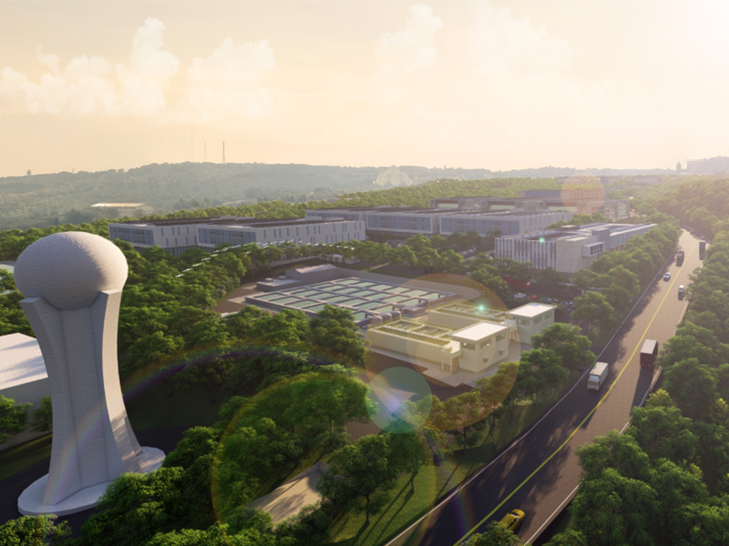

臺中市精密機械科技創新園區三期
臺中市精密機械科技創新園區三期緊鄰臺中市精密機械科技創新園區西側，占地25公頃，因具備鄰近企業總部、交通便捷與研發人才群聚等優勢，有大肚山黃金走廊上的鑽石之稱。
從1970年代起，中興工程顧問公司即伴隨臺灣經濟起飛的腳步，參與產業園區、科學園區等各類型園區規劃與開發工作，服務內容涵括政策研議、區址評估、可行性評估、實質規劃、工程規劃、環境影響評估、土地取得、產業招商、開發營運、土地租售、工程設計、施工監造等全生命周期的技術服務工作；服務對象包括中央與地方政府、民間開發單位、設廠廠商等。歷經50餘年成長精進，中興辦理各類型園區規劃開發面積占臺灣整體園區面積約85%，堪稱國內工程技術顧問領域中，參與園區開發成果最卓著的顧問機構，以前瞻與完整的技術服務，協助政府與民間致力推進臺灣產業發展的新頁。

臺中市精密機械科技創新園區三期緊鄰臺中市精密機械科技創新園區西側，占地25公頃，因具備鄰近企業總部、交通便捷與研發人才群聚等優勢，有大肚山黃金走廊上的鑽石之稱。

寶山2期擴建計畫位於新竹縣寶山鄉，面積約90.02公頃，由中興辦理整體規劃與都市計畫相關規劃作業，係爰於新竹園區現有廠房用地已有不足，科技部新竹科學園區管理局乃評估我國先進奈米製程發展需求及聚集效益，續於新竹園區周邊設置先進奈米製程量產廠房及所需公用設備，以強化產業佈局及提升國際競爭力，帶動我國高科技產業持續發展。
華新麗華工業區於105年經桃園市政府核准設置產業園區，原核准產業主要為發光二極體(LED)磊晶及微機電系統(MEMS)元件晶片製造，華新麗華公司考量產業發展趨勢及因應產業生產需求，擬變更引進產業為電線電纜製造業，由中興協助辦理可行性規劃報告及開發計畫之變更。

配合政府產業創新政策，並滿足國內產業迫切需求，透過篩選新竹園區周邊可利用土地，推動「新竹科學工業園區(寶山用地)擴建計畫」，並因應在地拆遷住民之社區用地配售需求，本擴建工程尚包括社區用地之開發。
竹科X基地位於原新竹科技特定區計畫內之東北側台肥公司新竹廠範圍內，面積約3.74公頃，為配合用地需求及新竹市政府重大建設開發，中興協助科技部新竹科學園區管理局辦理園區之可行性評估及擴建計畫。

為因應國內高科技產業未來用地需求，厚植高科技產業基礎技術，協助產業根留台灣及創造就業機會，中興於1年內竭力如期如質配合科技部南部科學園區完成92公頃台南園區(看西農場)擴建可行性評估、籌設計畫核定作業後，接續辦理園區實質規劃。

橋頭科學園區位於高雄新市鎮特定區計畫範圍內，面積約262.39公頃，係配合產業需求及促進加速投資政策經行政院指示開發，中興協助科技部南部科學園區管理局辦理園區之可行性評估、籌設計畫、都市計畫變更審議等作業。
中興以「彰化縣政府產業發展推動總顧問」角色，整合都計、地政、土木、環工、生態、地工、水利、港灣、交通、景觀、產業、法律、企劃、行銷、管理等各項專業，協助縣府向中央爭取4.4億補助，辦理打鐵厝園區、離岸風電運維碼頭、中臺灣農業科技園區等計畫，並針對產業政策執行方案、園區開發諮詢及輔導、廠商覓地及投資障礙排除、園區招商、政策先期評估等，提供縣府專業諮詢意見。另就推動地方產業創新研發推動計畫(地方型SBIR)，輔導100家以上廠商執行創新研發，成果豐碩，促進地方產業更蓬勃發展。
工業局配合前瞻基礎建設政策，透過關鍵性財源補助之政策工具挹注，推動「強化地方工業區公共設施補助方案」、「設置平價產業園區補助方案」計畫，藉由中興長年累積園區規劃與工程專業之經驗技術，協助辦理「開發在地型產業園區推動辦公室計畫」，除以在地思維輔導地方政府改善工業區公共設施老舊等問題外，並協助申請補助開發在地型產業園區，解決園區申設、規劃、開發、更新等階段遭遇之難題，以提升產業用地利用效率與增加有效供給，並解決產業用地供需失衡，達成地方政府增強園區環境設施服務水準及增設適地性產業用地之目標。
高雄市仁武產業園區占地74公頃，係中興以創新的用地取得方式協助業主順利整合台糖公司及125位私地主，於計畫啟動3.5年內快速完成產業園區申設程序的代表作品。

新光兆豐公司為多元活化其花蓮兆豐農場之土地利用，擬承繼生態環境保育、生活舒適便利及農業創新生產之三生概念，建置兼具開放性與教育意義之多元產業園區。透過秉持生態理念的草地展演和親子活動場所(體驗農莊、果園、馬場、生態高球場等)，塑造供本地居民和遊客親近自然空間。
屏東農業生物科技園區為國內首創唯一以農業生物科技產業為導向之高科技園區，已引進108家農業生技企業進駐，總投資金額達新台幣115億元，因應園區發展飽和及廠商需地殷切，中興辦理擴充園區開發許可申請，面積約165公頃，並續於園區建設階段配合廠商動線需求、公共設施工程之執行調整、地籍重測及不符使用地之範圍辦理計畫變更等工作，協助農委會完成創建農業生物科技廠域之使命。
基於厚植國內半導體產業基礎技術、協助半導體產業根留台灣，並確保台灣在半導體產業領先地位及扶植精密機械產業發展、創造就業機會等考量，爰有本擴建計畫。

中油公司為活化高雄楠梓園區233公頃土地，中興於102年起即協助其辦理整體發展規劃、環境影響評估及都市計畫變更作業，其中53公頃用地於107年配合中央政策設置「循環技術暨材料創新研發專區」及材料國際學院教學空間，透過整合事業體發展需求、歷史紋理、交通條件及鄰里活動需求，以「研發新樞紐、文化休閒新場域、商務服務新區」為發展定位，計畫總投資金額逾70億元，並可創造1.5萬名就業機會，於促進地方產業轉型發展與經濟繁榮的同時帶動都市整體發展。
林園高值化產業園區位於高雄市林園區，面積約5.95公頃，計畫區位置緊鄰林園工業區之中油林園廠，為台灣石化產業重要基地，帶動中下游石化產業發展。

本案服務內容係因應中科虎尾園區開發營運後實際需求，計畫調整部分土地使用，以及增加部分公共工程，而配合進行修正籌設計畫(含財務計畫)、開發計畫及細部計畫之變更作業。